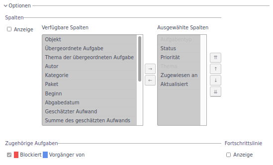
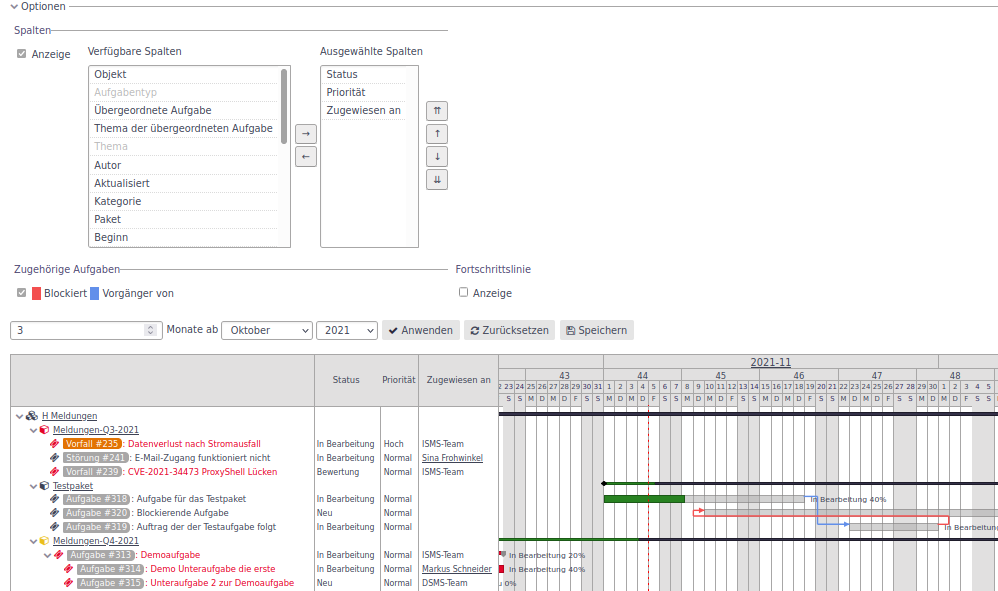
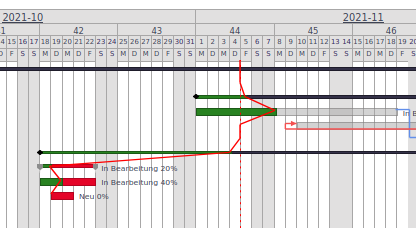
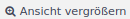
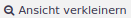
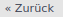
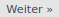
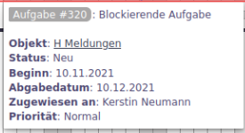

Verlauf
Funktionen Verlauf
Das Modul Verlauf bildet die Aufgaben aus dem Objekt und den unterlagerten Objekten als Gantt-Diagramm ab.

➊ Filter
➋ Optionen
➌ Anzeigebereich
➍ Monat vor/zurück
➎ Ansicht
➏ Anzeigebereich vor/zurück
➐ Aufgabenbaum
➐ Aufgabenverlauf
Filter
Zur Darstellung des Gantt-Diagramms wird beim Öffnen nach offenen Aufgaben gefiltert. Der Filter lässt sich wie in die Filtereinstellungen erklärt, vielfältig anpassen.
Optionen
In den Optionen können die anzuzeigenden Attribute der Aufgabe als Spalten rechts vom Aufgabenbaum angepasst werden. Wird der Bereich Optionen aufgeklappt, erscheint folgende Ansicht:

Setzt man das Häkchen Anzeige, werden die Ausgewählten Spalten im Diagramm neben dem Aufgabenbaum angezeigt.

Über die Auswahlfunktion in den Optionen lassen sich verfügbare Attribute in die Anzeige übernehmen, die Reihenfolge verändern oder auch wieder löschen.
Unterhalb der Spaltenauswahl kann noch ausgewählt werden, ob die Aufgabenverknüpfungen Blockiert und Vorgänger von als roter bzw. blauer Verbindungspfeil angezeigt werden.
Setzt man das Häkchen Anzeige bei der Fortschrittslinie so zeigt eine rote Linie, wie in dem folgenden Beispiel zu sehen, den Fortschritt in Bezug auf das Datum an:

Auf diese Weise erhält man einen Überblick über den Puffer bzw. die Verzögerungen im Projekt.
Anzeigebereich
In den Feldern des Anzeigebereichs wird festgelegt, wie viele Monate im Verlaufsfenster dargestellt werden. Neben der Anzahl wird der erste Monat definiert, der im Verlauf angezeigt wird.
Monat vor/zurück
Der Startmonat des Gantt-Diagramms kann über die Tasten einen Monat nach vorn bzw. nach hinten bewegt werden. Es werden dabei die konkreten Monate im Button eingeblendet.
Ansicht
Über die Button  bzw.  lässt sich die Granularität der Datumanzeige im Gantt-Diagramm anpassen. Es gibt 4 Stufen (von klein nach groß):
-
Nur der Monat,
-
Monat und Kalenderwoche,
-
Monat, Kalenderwoche, Wochentag,
-
Monat, Kalenderwoche, Tagesdatum, Wochentag.
Anzeigebereich vor/zurück
Mit den Button  bzw.  wird im Gantt-Diagramm der Anzeigebereich eine Einheit vor oder zurück geblättert.
Aufgabenbaum
Der Aufgabenbaum zeigt die Aufgaben in ihrer Struktur. In der obersten Ebene werden die Objekte angezeigt. Unterhalb der Objekte werden die dem Objekt zugeordneten Pakete und die Aufgaben ohne Paketzuordnung angezeigt. Unterhalb der Pakete sind die Aufgaben mit ihren Unteraufgaben.
Somit ergibt sich eine Baumstruktur. Durch Klicken auf die Pfeile vor den Objekten, lassen sich die untergeordneten Elemente ein- bzw. ausblenden.
Durch Klicken auf ein Element in dem Objektbaum wird die Übersichtsmaske des gewählten Objekts aufgerufen.
Aufgabenverlauf
Im Aufgabenverlauf werden die Elemente als Balken entsprechend dem Anfangs- und Enddatum angezeigt. Der prozentuale Erledigungsgrad wird über ein entsprechend anteilige grüne Einfärbung des Balkens angezeigt. Ist die Aufgabe überfällig, wird der restliche Balken rot eingefärbt.
Durch blaue und rote Pfeile werden die Verknüpfungen (blockiert / Vorgänger) zu anderen Elementen dargestellt.
Beim Darüberfahren mit der Maus wird ein Tooltip angezeigt, in dem, die wichtigsten Eigenschaften der Aufgabe angezeigt werden.

Durch Klicken auf die Aufgabe im Tooltip gelangt man zur Übersichtsseite der Aufgabe, durch Klicken auf den Objektnamen zur Übersichtsseite des Objekts.